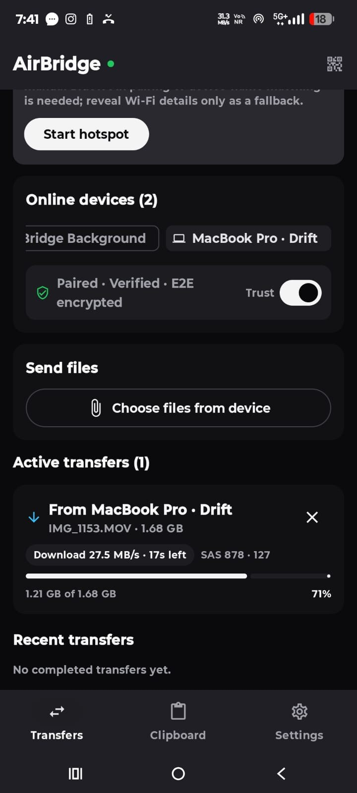

GUIDE ANDROID → WINDOWS
Android to Windows file transfer without USB drivers or an account
Windows and Android talk to each other only when an app is installed on both sides. AirBridge is that app: a portable Windows executable, a native Android app, and an encrypted direct connection over your own network instead of an upload queue.

Why Android to Windows file transfer is still fiddly
- Nearby sharing is not always available. Google’s Quick Share works on supported Windows PCs, but availability depends on device, region and how the feature is installed — and it is not open source.
- USB MTP needs drivers and patience. The phone appears as a camera-like device, large copies stall, and some OEM cable/driver combinations simply fail.
- Phone-link style apps have narrow scope. They are strongest at notifications, calls and recent photos rather than transferring an arbitrary 3 GB file into a folder you choose.
- Cloud drives need an account on both sides and upload the file before it can be downloaded, which is slower and leaves a copy outside your devices.
What AirBridge does on Windows
The Windows build is a single portable executable. It starts the AirBridge transfer service, opens the app UI in your browser at http://localhost:3000, and keeps an encrypted background session open for clipboard sync and incoming offers.
- Direct device-to-device transfer over your LAN using WebSockets, with WebRTC data channels when ICE succeeds.
- Resumable, verified file writes into a private
.partjournal, published toDownloads\AirBridgeonly after the SHA-256 digest matches. - Clipboard sync of text in both directions. Windows clipboard reads use the system’s own PowerShell
Get-Clipboard/Set-Clipboardworker, so no extra utility has to be installed. - Phone on your computer: view the Android screen, browse contacts, see who is calling and place calls from the desktop.
- CLI and daemon —
npx airbridge daemon --dir D:\Inboxfor a headless receiver.
Install on Windows (no admin required)
Run this in PowerShell:
powershell -ExecutionPolicy Bypass -Command "iwr https://raw.githubusercontent.com/DigantaDey/AirBridge/main/install.ps1 -UseBasicParsing | iex"The installer downloads AirBridge-windows-x64.exe (or AirBridge-windows-arm64.exe on ARM64 machines) into %LOCALAPPDATA%\AirBridge, verifies it against the release’s SHA256SUMS.txt, adds that folder to your user PATH, and offers -Autostart through a per-user Run key. Nothing is installed system-wide and no administrator prompt is needed.
Honest caveat: the Windows binary is not Authenticode-signed — a code-signing certificate is a paid subscription this project does not use. The installer downloads with the built-in curl.exe, which avoids the Mark-of-the-Web, so SmartScreen does not open on launch. If you grab the EXE in a browser instead, expect a “Windows protected your PC” sheet; compare the SHA-256 with the release notes before allowing it.
Pair the phone, then transfer
Install the Android app, open AirBridge on the PC and scan the QR code (or enter the six-character code). Pairing uses SPAKE2 so the code is never sent over the network, and both screens show a six-digit verification code you can compare. From then on the phone sees the PC as a trusted, verified peer.
The Windows Firewall may ask whether AirBridge can accept connections on private networks. That prompt matters: the transfer service listens on port 3000 by default (PORT changes it), and blocking it leaves discovery working while transfers fail.
Security model in one paragraph
Ephemeral ECDH P-256 key agreement plus HKDF-derived session keys, AES-256-GCM for every file chunk, clipboard item, call frame and screen frame, and a six-digit SAS to confirm the keys. Host-only actions — writing the clipboard, saving into the receive folder, opening Explorer — are loopback-only. Details, including what an attacker on the same network can still observe, are in the privacy guide and SECURITY.md.
Limits worth knowing
- No Store/MSIX package. AirBridge ships as a portable EXE, so there is no automatic Microsoft Store update path; the desktop build updates itself from signed release artefacts instead.
- Unsigned binaries mean SmartScreen friction for browser downloads, as described above.
- Clipboard images are macOS-only. On Windows the desktop clipboard bridge is text, powered by the built-in PowerShell clipboard cmdlets.
- View-only screen sharing. You can watch the phone screen; you cannot drive the phone from the PC.
- iPhone and iPad have browser support for file transfer and clipboard sharing, subject to browser permissions, rather than a native iOS app.
Questions about this guide
Do I need Google Quick Share or Nearby Share on Windows?
No. AirBridge has its own pairing and transport: a QR code or six-character code, then a direct encrypted link over your network. Quick Share is unrelated and can stay unused.
Does the Windows install need administrator rights?
No. The installer writes to %LOCALAPPDATA%\AirBridge and edits only your user PATH, plus an optional per-user Run key for autostart.
Windows says the app is unsigned. Is that expected?
Yes. Release binaries are not Authenticode-signed. Verify the file against SHA256SUMS.txt on the release page (the installer does this automatically) and prefer the curl-based install command, which does not set Mark-of-the-Web.
Does it work on Windows on ARM?
Yes — AirBridge-windows-arm64.exe is built and published with every release alongside the x64 build.
Which port does AirBridge use?
Port 3000 by default for the HTTP/HTTPS signalling service. Set the PORT environment variable to change it; the local UI stays on http://localhost:3000 unless you change that too.